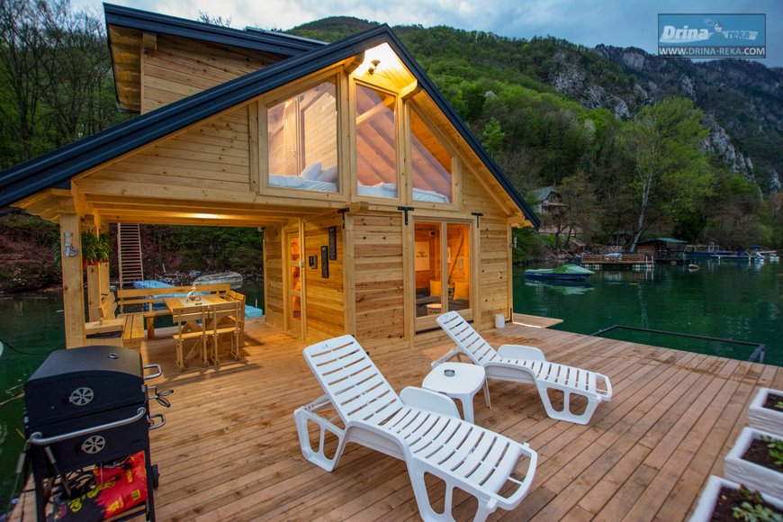

Perućačko jezero je udaljeno od Bajine Bašte 13 km i okruženo jee planinama Javor, Devetak, Zvijezda i Tara. Na obali jezera, smešten je Splav Perućac, idealan za smeštaj 5 osoba. Splav nudi kompletnu I visokokvalitetu stambenu površinu (dnevni boravak, kuhinja, kupatilo, galerijom sa dve spavaće sobe i staklenim frontom okrenutim ka jezeru) i prostranu natrkrivenu terasu . Čamac za 6 osoba vam stoji na raspolaganju. Parking i bežični internet su obezbeđeni.
